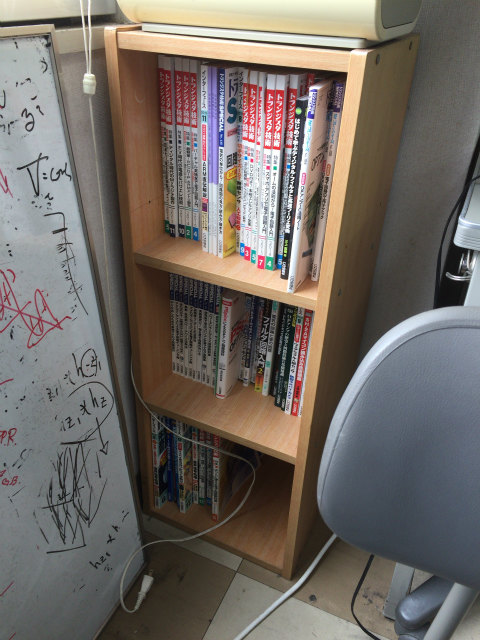
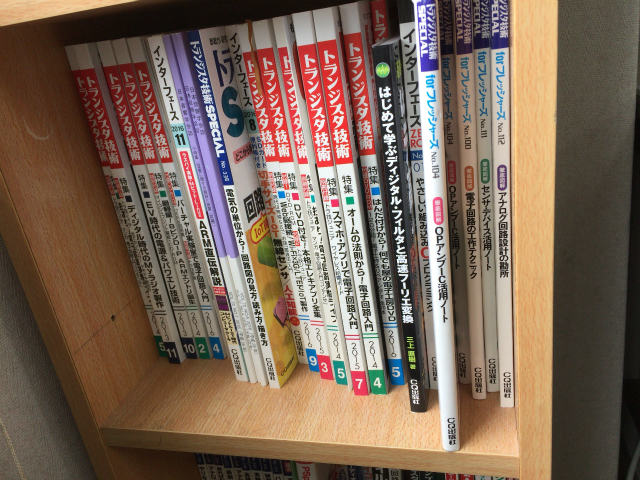

| ・ 地震 (H30.06.18) | |||
学生，教員とも無事．5階の研究室は引き出しが開く程度，実験室の装置は異常無しでした．大学は終日休講です． |
|||
|
日刊工業の山崩れ |
からっぽの引き出しが飛び出るようです | ||
|
東西の揺れ |
南北の揺れ | ||
|
KITKAT発見 |
洗剤が落ちてます | ||
|
サーバーは計算中 |
廃棄の紙が山崩れ | ||
|

大丈夫そうに見えて |

上段のトラ技が少し飛び出ています | ||
|
オルタスは短時間営業に |
電車止まってますし | ||